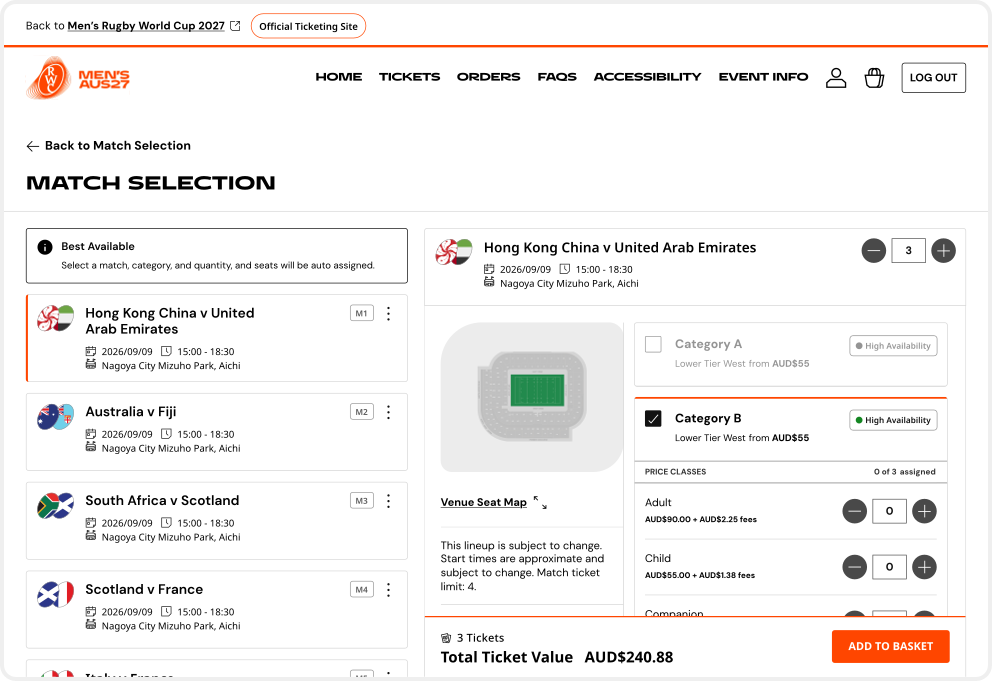
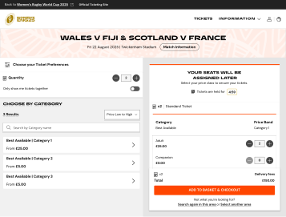
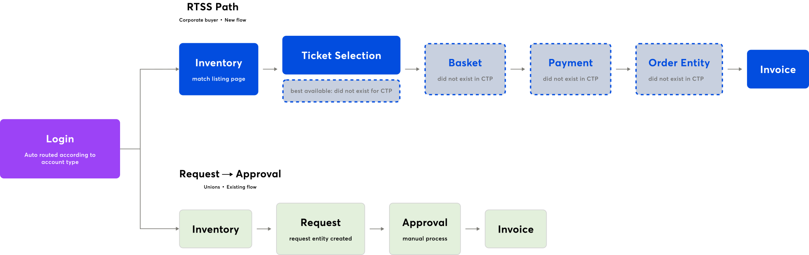
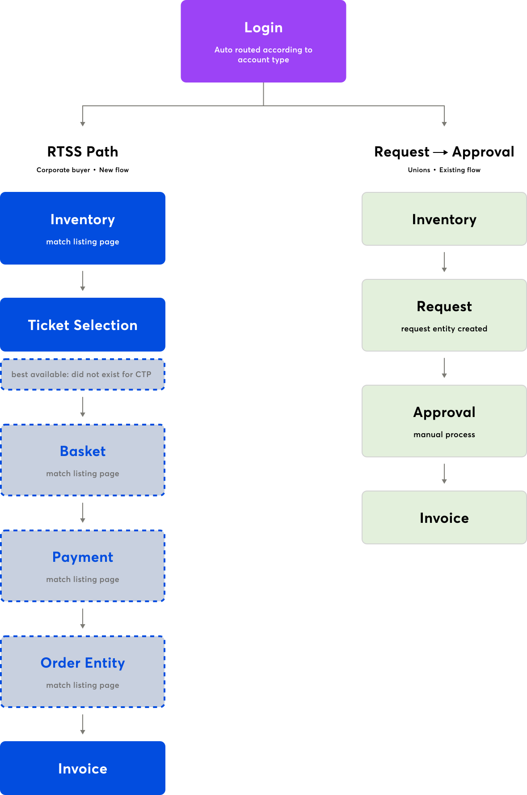
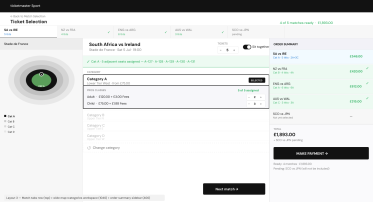
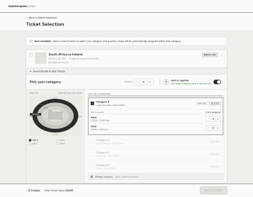
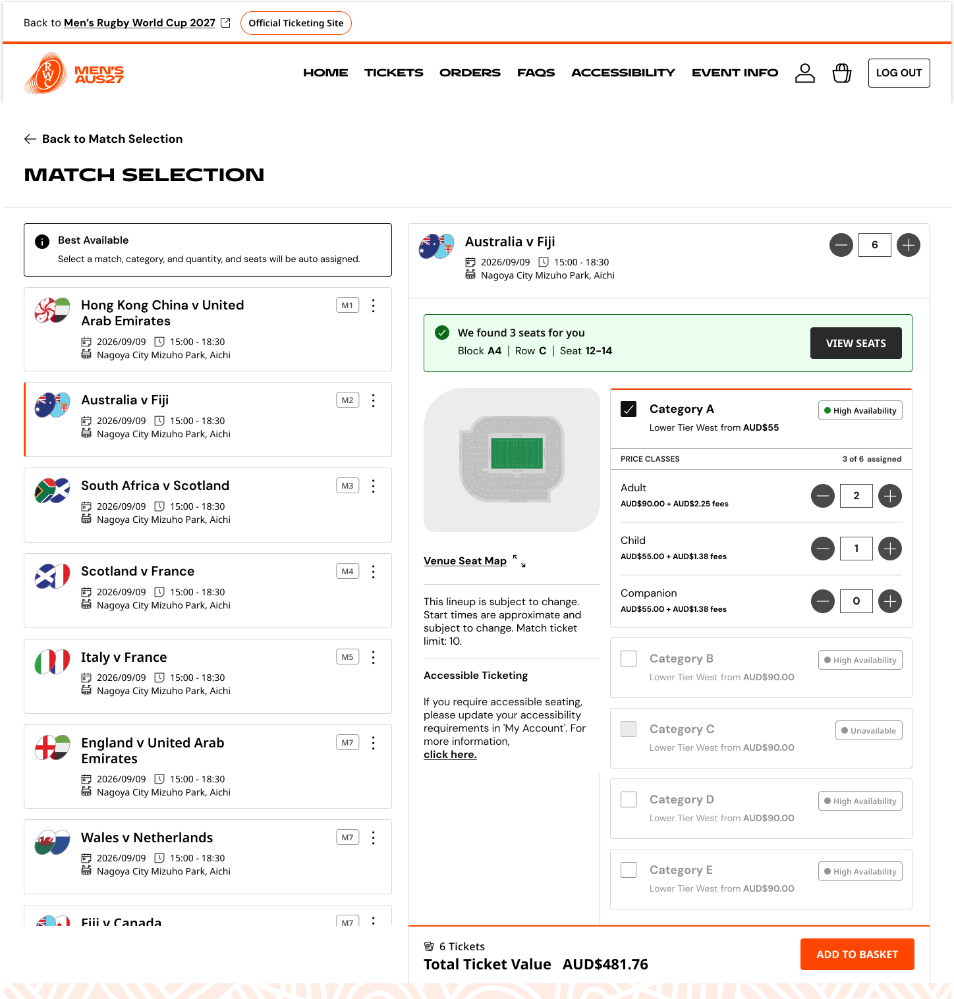
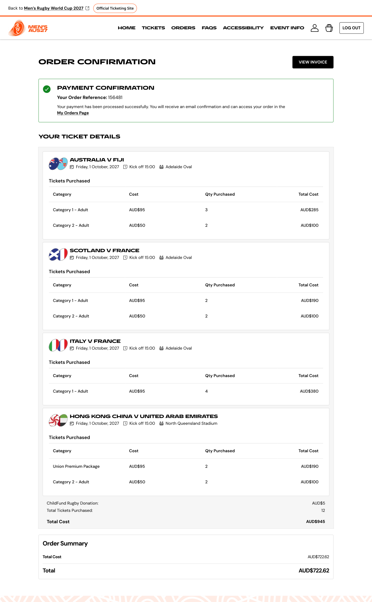

Designed CTP's first transactional layer — basket, payment, and order — for a platform built only for allocation management. Created a complete end-to-end B2B purchasing journey for Rugby World Cup 2027 corporate buyers, secured in real time against dynamic inventory.

CTP (Client Ticketing Platform) — Ticketmaster's B2B ticketing platform used by sponsors, corporate partners, and rugby unions to manage tournament ticket allocations.
The Problem
Corporate clients had no way to purchase Rugby World Cup 2027 seat inventory directly — the platform was built for stakeholder visibility, not transactional commerce. B2B buyers were forced through manual processes, causing delays, errors, and lost sales during time-critical inventory windows.
01 Context & Stakes
CTP supports purchases from account managers, corporate clients, and group booking coordinators who allocate large blocks of seats across live sports and entertainment events. Unlike consumer fans, these buyers pre-sell those seats to their own clients — a procurement workflow, not a discovery workflow.
During live tournaments, stadium reconfigurations, returned allocations, and reclaimed sponsor inventory can release new seats, often just hours before an event. These are typically high-demand matches with limited availability.
CTP operated on a Request → Approval model. Every request required manual review before tickets could be secured. While effective for planned allocation management, it wasn't designed for fast-moving inventory releases where availability changed within minutes.
For Rugby World Cup 2027, Ticketmaster wanted eligible stakeholders to purchase inventory directly within CTP. Delivering that required evolving a platform built for allocation management into a complete purchasing experience—from inventory discovery to checkout.
02 Problem Definition
Before designing anything new, a heuristic and accessibility audit was conducted across the existing CTP experience. The goal was to surface the violations already present in the platform — issues that would follow us into the new purchasing flow if left unresolved.
When inventory is released unexpectedly, the Request → Approval flow introduces too much latency. By the time requests are approved, high-demand seats are often gone, leaving eligible buyers unable to act in time.
CTP was built around request entities, not orders. Basket, payment, and checkout were entirely new capabilities, making every design decision foundational rather than an extension of existing patterns.

Corporate buyers (RTSS) and participating unions (Request → Approval) followed different purchasing journeys. Without clear distinction, users could easily enter the wrong workflow.
Market segments, seat pools, and workflow routing were all configuration-driven. The experience needed to become a reusable platform capability—not a tournament-specific solution.
03 Users & Context
CTP supported multiple stakeholder groups with distinct responsibilities, permissions, and purchasing workflows. While they shared the same platform, each came with different goals, requiring experiences tailored to how they worked rather than a one-size-fits-all journey.
The Corporate Buyer
RTSS Purchase Flow · Sponsors, Commercial Partners, Key Accounts
Purchases approved inventory on behalf of their organization through the RTSS flow. Works within corporate procurement processes, settles payments via bank transfer, and relies on invoices to complete internal purchasing and reconciliation.
The Union Representative
Request → Approval Flow · Participating Unions
Requests inventory through an established allocation and approval workflow. Since this experience remained unchanged, the primary design consideration was maintaining clear separation from RTSS purchasing.
04 Discovery & Research


A key insight from research was that corporate procurement follows a fundamentally different decision-making model than consumer ticketing. Unlike fans who browse and compare options, corporate buyers arrive with a predefined inventory objective and operate under strict time constraints.
As a result, familiar consumer patterns—such as exploratory browsing or extended comparison—added unnecessary friction. The experience instead needed to prioritize speed, clarity, and confidence by surfacing purchasing constraints early, reducing decision overhead, and supporting procurement workflows beyond checkout.
This led to a core design principle: Optimize for execution, not discovery.
Corporate buyer, research session, 2022
05 Constraints

01
Native Transaction Experience
The entire purchasing journey—from inventory selection to confirmation—had to be completed within CTP. Existing Ticketmaster checkout flows could not be reused.
02
No Transactional Foundation
CTP was built for request management, not orders. Basket, checkout, confirmation, and post-purchase all had to establish new platform capabilities.
03
Configurable, Not Tournament-Specific
Purchase limits, seat pools, workflow routing, and user entitlements were configuration-driven. The solution needed to scale beyond Rugby World Cup 2027 without redesign.
04
Parallel Purchasing Models
The platform had to support both RTSS purchasing and the existing Request → Approval workflow, while keeping the experiences clearly separated.
05
Procurement Doesn't End at Checkout
For corporate buyers, invoices and order history were primary outcomes—not secondary downloads. Post-purchase needed to support procurement workflows long after tickets were secured.
06 Design Principles
Rather than introducing a new seat allocation model, the experience extended CTP's existing Best Available capability. Design effort focused on adapting proven infrastructure for a new purchasing model.
Corporate buyers arrive with a defined objective and limited time. Every interaction was designed to reduce friction, surface constraints early, and move users closer to securing inventory.
Rules, limits, payment methods, and workflows were configuration-driven so the experience could support future tournaments without redesign.
07 Explorations

08 How the direction evolved
Beyond direction-level exploration, four tensions shaped the final architecture.
What happened
Reusing legacy Best Available broke accessibility and blocked future scaling
What was at stake
Accessibility violations couldn't be back-fixed once the ticketing phase was live.
How I decided
I refused to trade accessibility for delivery speed — violations would have needed post-launch engineering effort to resolve, and the flow would have inherited breakage that a partial redesign could have avoided. Accessibility had to be built into the design, not surfaced later in reviews. The MVP map was the artifact I used to prove partial redesign was possible within the delivery timeline.
What happened
PM wanted auto flow — the system would move buyers forward automatically after each match
What was at stake
Auto flow would have taken control away from buyers mid-decision — if a buyer selected 6 tickets and wanted 2 more, the system would already have moved them forward. It also introduced screen reader edge cases requiring a parallel non-auto path.
How I decided
Manual side-panel selection preserved user control at v1 and matched Nielsen's heuristic of user control and freedom. It also left a clean path for bulk selection later — a buyer could check a box to apply their category across multiple matches. Similar tradeoffs applied to seat-together toggle, interactive seat map, and multi-category selection — each scoped out of v1 because shipping without a defensible scale path would have created platform debt.

What happened
Dual-access users couldn't tell which flow they were in — visual differentiation had to carry that load
What was at stake
A corporate buyer accidentally using the approval flow would sit in review while inventory disappeared. A union representative accidentally using RTSS would commit real-time purchases without governance review — unauthorized purchases that had to be unwound with finance teams. For dual-access users, one flow was indistinguishable from the other without visual anchors; mistakes stayed silent until reconciliation surfaced them.
How I decided
RBAC handled who could access what, but couldn't handle which flow a dual-access user was currently in. Visual differentiation had to carry the cognitive load of "which mode am I in." I designed the two interfaces to look and behave distinctly at the level of layout, primary actions, and state indicators — not skin-deep color changes but structural cues that made the current flow unmistakable.
What happened
I pushed hard for an interactive seat map — engineering feasibility changed my position
What was at stake
The interactive map needed to render differently per stadium. Given the RWC 2027 delivery timeline and match volume, the engineering cost would have compressed either MVP scope or shipping quality.
How I decided
I let engineering feasibility change my position — but the real move was recognizing the interactive map could be reintroduced later as a configuration without breaking anything shipped in v1. Static image per row wasn't a compromise — it was a placeholder for a future interactive version, chosen because it could be swapped without unshipping user habits. The client had listed interactive seat map as "good to have," and past user interviews showed the pain point was seat perspective visibility, not interactivity specifically.
09 Final Solution
Research guided every design decision. Interactions, information hierarchy, and feature prioritization were shaped by observed user behaviour, platform constraints, and business goals.

Operational Efficiency principle
Best Available allocation optimizes for speed and fairness at scale — surfacing a seat map would have added decision overhead without improving outcomes. The category interface lets buyers express preference (price tier, section type) while the allocation engine handles seat assignment behind the scenes.

Experience Constraint — basket as checkout-time validation point
RTSS inventory is dynamic, but continuously polling availability during basket review would have introduced cognitive churn (items disappearing mid-review) and significant backend load. Instead, the basket holds inventory as staged until checkout submission, where availability is revalidated against the live pool. If a held item is no longer available at that moment, the buyer sees explicit error feedback identifying which selections were lost — preserving the rest of the basket and allowing recovery without restarting the flow.

B2B procurement reality + Platform Scalability principle
Corporate buyers settle large-volume transactions through bank transfer, not card — it matches how their finance teams approve and reconcile spend. Designing for bank transfer first reflected the actual buyer workflow rather than retrofitting a consumer payment model. The payment screen architecture was designed to accommodate card as a second method in a later phase without restructuring the flow.

Invoice-Driven Procurement constraint
For corporate buyers, the transaction does not end at confirmation — the invoice is what allows the buyer to close the loop with internal procurement, finance, and downstream pre-sale operations. Treating Invoice as a primary CTA on the confirmation screen, rather than a secondary download link, acknowledges the real end-state of the workflow. Confirmation states were also designed against a future B2B order entity rather than the existing request-based pattern, ensuring the work scales beyond RWC and integrates cleanly when the order model is implemented.


Operational Efficiency principle + edge case design discipline (25 states defined across the journey)
With bank transfer as the only payment method at launch, recovery design carried more weight than in a multi-method consumer flow — a buyer hitting a failure state has no card fallback to switch to. The design distinguishes two failure modes that look superficially similar but require different buyer actions: "Banking details not filled" is caught client-side before submission, with the missing fields surfaced inline so the buyer can correct and proceed without losing context; "Payment failed" is a post-submission rejection from the bank or processor, where the inputs may be valid but the transaction couldn't complete.
See the full flow
After several rounds of UX, accessibility and quality testing I designed CTP's first transactional layer — basket, payment, and order — for a platform built only for allocation management.
10 What shipped and what it unlocked
11 Reflection
| Topic | Reflection |
|---|---|
|
The brief wasn't the real problem |
The biggest breakthrough came before designing a single screen: realizing CTP lacked a transactional foundation. Designing a checkout without orders, basket, or payment would have created another tournament-specific workaround instead of a reusable platform capability. |
|
What I'd Change |
Earlier access to back-office configuration and platform teams would have uncovered future dependencies sooner. More stakeholder interviews and product mapping could also have identified adjacent capabilities—like returns and entitlements—earlier in the process. |
|
What I'd validate after launch |
I'd measure time-to-purchase, checkout validation failures, "item no longer available" errors, and invoice download rate. Together, these would show whether buyers could secure inventory quickly and complete downstream procurement tasks. |
|
What this project taught me |
Platform design is often about solving beyond the brief. Scoping the MVP exposed foundational capabilities the platform would need for future tournaments, turning a one-off feature into a reusable product investment. |
12 Next Steps
The MVP established the transactional foundation. These intentionally deferred capabilities build on that foundation without requiring architectural redesign.
Buyers can select specific seats instead of relying on Best Available. This extends the purchasing experience to premium hospitality, accessibility, and group bookings.
Replace fixed purchase limits with configurable rules based on client, inventory, and event. This expands the platform from static allocation rules to flexible purchasing policies.
Once the order model is established, resale and ticket management become downstream capabilities built on the same transactional foundation.
With RTSS and the transactional layer in place, CTP evolves from an allocation platform into a reusable B2B commerce platform. Future tournaments can build on the same order model, workflows, and platform capabilities instead of starting from scratch.